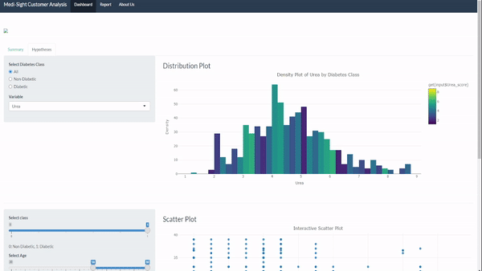
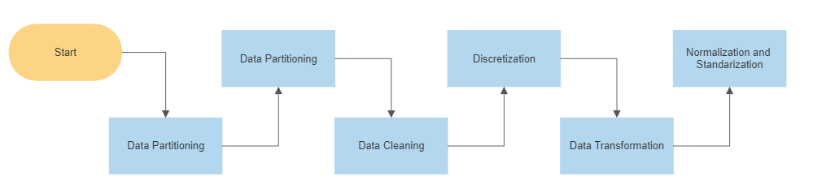

Technical Description of Web App
The Medi-Sight Team
10 June, 2020
Content
- Brief Introduction
- Data Sources
- Tools Used
- Data Transformation
- Main Libraries
- Graduate Employment Dataset
- Visualizations Part 1
- Graduates by institutions
- Visualizations Part 2
- Shiny Application
- References
1. Brief Introduction
This webpage will detail the process involved in producing the report, highlighting any key components and design features. It will also outline how the date was preprocessed and transformed to be compatible for R Shiny and displayed in R Markdown.
Navigating the website:

2. Data Sources
The dataset used for this project is publicly available, and contains the precise medical information for 1000 patients who were tested for the presence of diabetes. There are 14 attributes present in the dataset, mostly pertaining to the contents of a particular bodily substance, which was deemed at least somewhat related to the incidence of diabetes.
Each patient was classified as either diabetic, pre-diabetic, or non-diabetic - each of which is explained below. Note that this dataset does not differentiate between any different types of diabetes, and merely states whether a patient has diabetes at all. The dataset was saved in the CSV format for optimal processing in the R program.
The main features of the Medi-Sight dashboard are:
- Summary of dataset
- Scatter plot of age and BMI
- Trends in Urea levels in patients
- Correlation of high blood pressure
- Co-variables LDL and HDL
3. Tools Used

4. Data Transformation
Firstly, we will work on graduate employment dataset.
Steps of data transformation:

Multiple preprocessing operations were conducted to ensure the data is able to be analyzed effectively and efficiently. For unbiased and accurate results, it is essential to make our raw data more reliable, consistent, and clean. In our analysis, we have applied the following pre-processing methods in the R studio environment for different research cases:
- Data partitioning
- Data cleainging
- Discretization by binning
- Data Transformation
- Removing Outliers
- Normalization
- Standarization
Secondly, we will work on graduates by institution dataset with the same same manipulations but adding melt function to make data tidy.
For more information please refer to the datawrangling documentation.
Main Libraries
library(shiny)
library(ggplot2)
library(dplyr)
library(tidyr)
library(DT)
library(knitr)
library(kableExtra)
library(ggthemes)
library(plotly)
library(rsconnect)
library(shinythemes)(plotly)Medi-Sight Dataset
The dataset is first imported into R-Shiny for the visualizations. Documentation for the processing can be in the previous report.
data_real <- readRDS("data/Dataset-of-Diabetes.rds")]## ID,No_pation,Gender,AGE,Urea,Cr,HbA1c,Cholesterol,TG,HDL,LDL,VLDL,BMI,CLASS
## 502,17975,F,50,4.7,46,4.9,4.2,0.9,2.4,1.4,0.5,24,N
## 735,34221,M,26,4.5,62,4.9,3.7,1.4,1.1,2.1,0.6,23,N
## 420,47975,F,50,4.7,46,4.9,4.2,0.9,2.4,1.4,0.5,24,N
## 680,87656,F,50,4.7,46,4.9,4.2,0.9,2.4,1.4,0.5,24,N
## 504,34223,M,33,7.1,46,4.9,4.9,1,0.8,2,0.4,21,N
## 634,34224,F,45,2.3,24,4,2.9,1,1,1.5,0.4,21,NImporting the tests
Next, the rest of the visualizations were imported, an example is shown below.
data_c <- readRDS("data/framedClasses.rds")
data_h2 <- readRDS("data/preprocessed2.rds")
data_h4 <- read.csv("data/preprocessed4.csv")
test1 <- read.csv("data/anova_HDL_high_LDL_low.csv") #Low LDL and High HDL
test2 <- read.csv("data/anova_HDL_low_LDL_high.csv") #high LDL and low HDL
test3 <- read.csv("data/anova_HDL_low_LDL_low.csv") #Low LDL and low HDL
test4 <- read.csv("data/anova_HDL_high_LDL_high.csv") #high LDL and High HDL
data_h5 <- read.csv("data/preprocessed5.csv")data %>%
| Marker | DF | Sum SQ | Mean Sq | F value | Pr(>F) |
|---|---|---|---|---|---|
| HDL | 1 | 0.026 | 0.02609 | 0.291 | 0.590 |
| LDL | 1 | 0.081 | 0.08098 | 0.904 | 0.343 |
| HDL:LDL | 1 | 0.103 | 0.10303 | 1.150 | 0.285 |
| Residiuals | 187 | 16.756 | 0.08960 |
We are able to take a look at a summary of our dataset through an interactive pie chart. This gives an ability to check the importation of the dataset is correct and trending the expected way.
output$agevconditionPieChart <- renderPlot({
colmap <-
c(
# No Diabetes
"#bdb2ff",
# Pre-Diabetes
"#ffc6ff",
# Diabetes
"#fdffb6",
# ITE
"#caffbf",
# NAFA DEG
"#a8dadc"
)
ggplot(class_counts(), aes(x="", y=n, fill=CLASS)) +
geom_bar(stat="identity", width=1) +
coord_polar("y", start=0) +
theme_void() +
labs(title = "Class Counts by Age", fill = "Class") +
scale_fill_manual(values = c(colmap))
})))We are now able to perform more complex visualizations that enhance the understanding of the dataset such as the scatterplot for the variables Age and BMI as predictors of diabetes.
output$scatterplot <- renderPlotly({
filtered_data <- subset(data_h4, Diebetic == input$scatterClass & AGE >= input$age[1] &
AGE <= input$age[2] & BMI >= input$bmi[1] & BMI <= input$bmi[2])
plot_ly(data = filtered_data, x = ~AGE, y = ~BMI, type = "scatter",
mode = "markers", colors = c("#1f77b4"),
marker = list(size = 8, opacity = 0.8)) %>%
layout(xaxis = list(title = "Age"),
yaxis = list(title = "BMI"),
title = "Interactive Scatter Plot",
colorway = c("#1f77b4"))
})))The same can be performed for the ANOVA Tables
...
output$scatter_plot <- renderPlot({
data_h5$Diebetic <- as.factor(data_h5$Diebetic)
ggplot(data_h5, aes(x = LDL, y = HDL, color = Diebetic)) +
geom_point() +
scale_color_manual(values = c("red", "green"), labels = c("No", "Yes")) +
labs(x = "LDL level", y = "HDL level") +
ggtitle("Relation of LDL and HDL levels with Diabetes") +
geom_vline(xintercept = input$ldl, linetype = "dashed", color = "blue") +
geom_hline(yintercept = input$hdl, linetype = "dashed", color = "blue")
})
Rendering the Visualizations
# filter data by diabetes class
if (input$densityclass == "All") {
filtered_data <- data_h2
} else if (input$densityclass == "Non-Diabetic") {
filtered_data <- data_h2 %>% filter(Diebetic == 0)
} else {
filtered_data <- data_h2 %>% filter(Diebetic == 1)
}
# create density plot
p <- plot_ly(filtered_data, x = ~Urea, color = ~get(input$Urea_score), type = "histogram")
# customize layout
p %>% layout(title = "Density Plot of Urea by Diabetes Class",
xaxis = list(title = "Urea"),
yaxis = list(title = "Density"),
barmode = "overlay")
})
7. References
For full codes please refer to the coding documentation attached to the presentation.
[1] Dankwa-Mullan, I., Rivo, M., Sepulveda, M., Park, Y., Snowdon, J., & Rhee, K. (2019). Transforming diabetes care through artificial intelligence: the future is here. Population health management, 22(3), 229-242.
[2] Centers for Disease Control and Prevention. (2023, April 4). About Prediabetes & Type 2 Diabetes. National Diabetes Prevention Program.
[3] Islam, L., Islam, M.R., Akter, S., Hasan, M., Moni, M., & Uddin, N. (2022). Identifying Heterogeneity of Diabetics Mellitus Based on the Demographical and Clinical Characteristics. Hum-Cent Intell Syst 2, 44–54.
[4] Sneha, N., & Gangil, T. (2019). Analysis of diabetes mellitus for early prediction using optimal features selection. J Big Data 6, 13. .
[5] Zhao, J., , Zhang, Y., Wei, F., Song, J., Cao, Z., Chen C., Zhang K., Feng, S., Wang, Y., & Li, W. (2019). Triglyceride is an independent predictor of type 2 diabetes among middle-aged and older adults: a prospective study with 8-year follow-ups in two cohorts. J Transl Med 17, 403.
[6] Fink, R. I., Kolterman, O. G., Griffin, J., & Olefsky, J. M. (1983). Mechanisms of insulin resistance in aging. The Journal of clinical investigation, 71(6), 1523-1535.